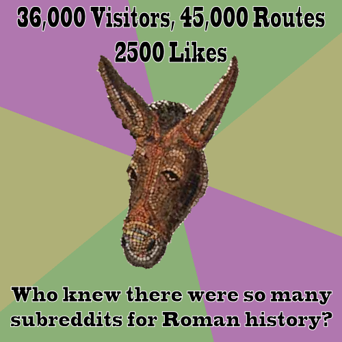

After two weeks, ORBIS has received over 36,000 visitors, with 4000 return visitors and over 45,000 route queries to the map. People are downloading the traditional PDF version of the article, as well as CSVs and KMLs of their routes. Even more exciting is the overwhelmingly positive feedback we’ve received on Twitter, G+, Facebook, Reddit, Metafilter, Pinterest, and several other social media sites I’ve never heard of and don’t take part in. The best viral media strategy, it seems, is to just produce something really innovative.In the last week, I’ve done an informal survey and basic analysis of social media response to various digital historical map-based works. These take the form of animated maps of historical borders or Simile Exhibits of historical events or traditional web maps with various layers drawn from historical datasets. In most ways, the language used to assess these maps has been the same as the language used to assess ORBIS, with “awesome” and “cool” even showing up. But there’s one word where ORBIS is significantly overrepresented:
“fun”
Let’s be very clear, other than the existence of a wagon travel option and the fact that it has something to do with historical travel, ORBIS is nothing like Oregon Trail. There is no hunting minigame, no snakebites, no fording the river, no pepperoney and cheese. And yet, Oregon Trail is mentioned more in relation to ORBIS than Pleiades, the Digital Atlas of Roman and Medieval Civilizations, Rome Reborn, Omnes Viae or any other scholarly digital project about Rome put together. It is, I think, because ORBIS is “fun”. What does that mean? I think the intuitive sense being expressed by this comparison and the predominance of that word is the understanding that a model is something that you interact with in a manner best described as play. You play with ORBIS, to see if small changes have disproportionate effects, and you’re rewarded not with some gamified, badgy nonsense, but with real increased understanding when you see that travel from one place to another was more or less contingent on the factors you explored.
ORBIS is a game because games are models and it’s fun because, like Angry Birds, it gives positive feedback through simple mechanics. Let’s be clear, we could have made the site much prettier, if we’d had the time and funding, but that just reinforces the fact that the most basic mechanics of ORBIS are exciting enough to warrant putting up with a map interface that’s less attractive than Europa Universalis, Civilization 5, or Seven Cities of Gold. Maybe one day scholars and developers of historical, map-based games will collaborate to produce something that is both a historically accurate model of world systems and provides refined UI/UX. Until then, we can continue to produce interactive scholarly works that attract a broad audience by leveraging the real desire on the part of readers to engage with the material in a substantive and playful way. This may sound disconcerting to a traditional scholar who wants their work to be taken seriously, but I don’t think that this definition of fun and play equate to frivolity. And, perhaps if it sometimes does, and folks want to make jokes about being stricken with “dysentarius” or talking to their “GPSius”, or they want to have a mosaic donkey make wisecracks about a historical transportation network, then maybe that’s not such a bad thing either.